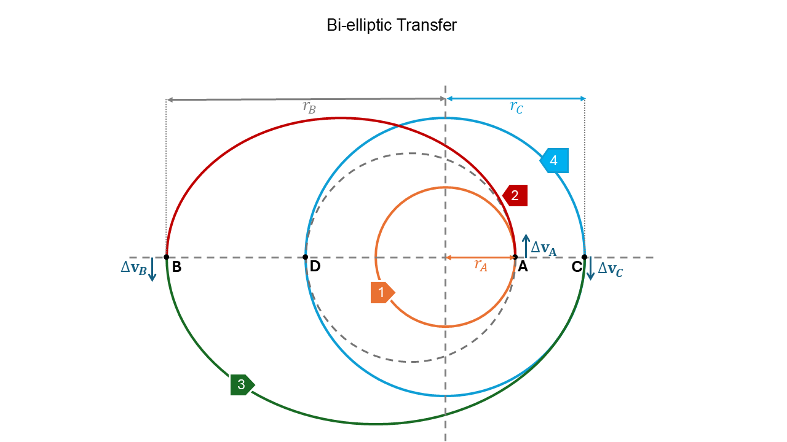

Orbital Maneuvers#
Prepared by: Mitansh Choksi, Adriana Lopez and Angadh Nanjangud
In this lecture we aim to cover the following topics:
Orbit Maneuvers#
Manuevers are implemented to transfer the spacecraft from one orbit to another. Orbital changes can have different objectives:
Inject the probe into an interplanetary transfer
Move the spacecraft from a parking orbit to an operetive one ( e.g. LEO to GEO)
Rendezvous and dock with another spececraft ( e.g. with the ISS)
Compensate for the effect of perturbations (e.g. N-S, E-W station keeping of GEO)
Manuevers are implemented by firing the propulsion system, we can see this as an addtional term in the equations of motion:
Firing the propulsion system means need propellant. As launching mass is expensive we need to design control laws that allow the operator to implement the transfer with minimum propellant: optimal control theory
With high thrust rocket engines the firing time is short and the maneuver can be modelled as an instantaneous change in the velocity: impulsive \(\Delta \mathbf{v}\)
We search for minimum \(|{\Delta \mathbf{v}}|\) maneuver because they require minimum propellant mass!
Frequently an orbital maneuver has the objective of changing (increasing) the orbital energy (e.g. moving from a Low-Earth orbit to a GEO, compensate for atmospheric drag,…)
Effect of a \(\Delta \mathbf{v}\) on orbital energy#
Before the maneuver:
After the maneuver:
Change in Energy
Here \(v_0\Delta v \cos(\alpha)\) is the dominant term.
For a given \(\Delta v\) (i.e. propellant) how can we maximise the energy change \(\Delta E\)?
\(\Delta E\) is maximised when:
\(v_0\) is high \(\mathbf{\rightarrow}\) applying the maneuver when \(v_0\) is high (e.g. at perigee)
\(\cos(\alpha) = 1\) \( \rightarrow\) \(\alpha = 0\) \(\rightarrow\) \(\mathbf{v}\) and \(\mathbf{\Delta v}\) are aligned \(\rightarrow\) tangential burn
\(\bf Note\): \(v_0\Delta v \cos(\alpha)\) can be negative \(\rightarrow\) it is possible to reduce E
Effect of a \(\Delta \mathbf{v}\) on angular momentum#

Before the maneuver:
After the maneuver:
Change in angular momentum
For a given \(\Delta v\) (i.e. propellant) how can we maximise \(\Delta\) \(h\)?
Execute the maneuver when \(r\) is big (e.g. at the apogee)
Change the transverse velocity: \(\Delta \mathbf{v}\) aligned with \(\mathbf {v_{\theta}}\)
Note: A radial maneuver does not change the angular momentum as \(\beta = 0^{\circ}\)
Hohmann Transfer#
The problem is that we need the most efficient, bi-impulsive transfer between two circular coplanar orbits.
Problem
We need to transfer the spacecraft from an initial orbit with semi-major axis \(a_1\) to a final orbit with semi-major axis \(a_3\). The most optimal solution for \(\Delta E\) are tangential maneuvers.
Solution:
We draw an ellipse tangent to both the circular orbits and compute the \(\Delta \mathbf{v}_{s}\)!
Transfer Orbit:
The transfer orbit \(2\) has perigee radius \(r_p = a_1\) and apogee radius \(r_a = a_3\). The semi-major axis is:
Form \(a_2\), \(r_p\) and \(r_a\) the eccentricity of the transfer orbit can be found to be:
Hohmann transfer, \(\Delta \mathbf{v}\) and transfer time#
We use the Vis-Viva equation: \(\frac{1}{2}v^2-\frac{\mu}{2a}\) (Hint: We ALWAYS use this to compute \(\Delta \mathbf{v}\) ). The steps for calcualting \(\Delta \mathbf{v}\) are:
Initial circular velocity :
(171)#\[v_{A_1} = \sqrt{\frac{\mu}{a1}}\]Final circular velocity :
(172)#\[v_{B_3} = \sqrt{\frac{\mu}{a3}}\]Initial transfer velocity:
Final transfer velocity:
Total \(\Delta v\) (Both maneuvers to increase the velocity):
(173)#\[\Delta v = \Delta v_1 + \Delta v_2 = (v_{A2}- v_{A1})+(v_{B3}-v_{B2}) = v_{A1}(\sqrt{\frac{a_3}{a_2}}-1)+ v_{B3}(1-\sqrt{\frac{a_1}{a_2}})\]Time of flight (ToF) =
(174)#\[\frac{1}{2}T_2 = \frac{1}{2}2 \pi \sqrt{\frac{a_2^3}{\mu}} = \pi \sqrt{\frac{a_2^3}{\mu}}\]
Bi-elliptic transfer#
When the ratio etween the final and starting semi-major axes is high (approximately 11.94) we use a bi-elliptic transfer to reduce the \(\Delta \mathbf{v}\)
A bi-elliptic transfer is a three-impulse transfer in which first we inject the spacecraft into an ellipse with a very high apogee.
Let us look at the figure below:

The figure shows a bi-elliptic transfer. The spacecraft starts at point A, with orbit 1, then a tangential velocity is applied at A which causes the spacecraft to transfer into elliptic orbit 2, when it reaches point B another tangential velocity is applied which causes the spacecraft to enter orbit 3. As it reaches point C, reverse velocity is applied to enter stable orbit 4.
The dotted line from A to D shows the transfer if a Hohmann Transfer was to be used.
If B is very far then the velocuty in B is very low and \(\Delta \mathbf{v_B}\approx 0\)
Both \(\Delta \mathbf{v_A}\) and \(\Delta \mathbf{v_C}\) are performed at perigee where the velocity is maximum
The downside to a bi-elliptic transfer is the long transfer time. This raises the question, why use bi-elliptic transfer at all?
The reason we use bi-elliptic transfer is when the ratio between semi-major axes between the starting and ending point is high, it is more fuel efficient than using a Hohmann transfer. For longer missions where time is not of the essence it makes more sense to use the most fuel efficient method for transfering spacecraft.
Non tangential transfer#
Having looked at fuel efficient transfers we now look to time efficient transfers. To reduce the Time of Flight we need to use more propellant and this involves a non-tangential \(\Delta \mathbf{v}\).
Have a look at the figure below:
Solution Procedure:
Take the selected \(r_{a_2}\) and calculate
(175)#\[a_2 = \frac{r_{a_2} + a_1}{2}\]and
(176)#\[e_2 = \frac{r_{a_2}-a_1}{r_{a_2}+a_1}\]Use the orbit equation (see below) to compute \(\theta_2\)
(177)#\[r_2 = \frac{a_2(1-e_{2}^2)}{1 + e_2 cos\theta}\](178)#\[r_2(\theta_2) = a_3 = \frac{a_2(1-e_{2}^2)}{1 + e_2 cos\theta_2}\]From \(\theta_2\) compute TOF with Kepler’s Equation
Calculate \(\Delta v_{A_2}\) from:
(179)#\[\frac{1}{2} v_{A_2}^2 -\frac{\mu}{a_1} = \frac{-\mu}{2a_2}\]and
(180)#\[\Delta v_A = v_{A_2}-v_{A_1}\]where \(\Delta v_A\) is a scalar value
Calculate:
(181)#\[\mathbf{v_{B_2}}=\frac{\mu}{h_2} (e_2 \sin\theta_2)\mathbf{e_r} + \frac{\mu}{h_2} (1+\cos\theta_2) \mathbf{e_{\theta}}\]Here:
(182)#\[v_r = \frac{\mu}{h_2} (e_2 \sin\theta_2)\]and
(183)#\[v_{\theta}=\frac{\mu}{h_2} (1+\cos\theta_2)\]and
(184)#\[\Delta \mathbf{v_B} = \mathbf{v_{B_3}}-\mathbf{v_{B_2}}\]with \(\mathbf{v_{B_3}} = v_{B_3}\mathbf{e_{\theta}}\)
Plane Change maneuver#
For plane change maneuvers we are interested in two things:
We need a change in the orbital inclination i
We need a change in \(\Omega\)
Plane change manuevers are very expensive as they require a rotation of the entire velocity vector.
Problem: Pure Inclination change.
The Solution:
To change the inclination without changing the orbit shape we need to rotate \(\mathbf{h}\) while keeping E and \(h\) fixed (thus keeping the orbit shape fixed).
If E is fixed then \(\mathbf{v}\) is unchanged
If \(h\) is fixed then \(\mathbf{v_\theta}\) is unchanged
The above two bullet points shows rotation about r of \(\Delta i\)
Let’s take a look at a figure to help visualise things.
\(\Delta \mathbf{v} =2 \mathbf{v_{\theta}}\) sin \(\frac{\Delta i}{2}\)
If circular then \(\mathbf{v}=\mathbf{v_\theta \rightarrow} \Delta \mathbf{v} = 2\mathbf{v} \sin\frac{\Delta i}{2}\)
If \(\Delta i\) is small then sin \(\frac{\Delta i}{2} \approx \frac{\Delta i}{2} \rightarrow \Delta \mathbf{v} = \mathbf{v} \Delta i\)
When possible change i when v is low